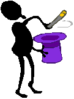

The Web address of this article is
http://sfhelp.org/gwc/wounds.htm
Updated
12-29-2014
Clicking underlined links here will open a
new window. Other links will open an informational popup,
so please turn off your
browser's popup blocker or allow popups from this nonprofit Web site.
If your playback device doesn't support Javascript, the popups may not display.
Follow underlined links after
finishing this article to avoid getting lost.
This is one of a series
of articles in Lesson 1 in
this Web site - free your
true Self to guide you in calm and conflictual times, and
reduce significant psychological wounds.
The article summarizes six epidemic wounds that come from early-childhood
abandonment, neglect, and abuse.
This article
assumes you're familiar with...
the intro to this Web
site, and the premises underlyingit.
this comparison of true Self and false self behavioral
traits, and...
the lethal [wounds + unawareness]
cyclethat is spreading in
our society,
This brief YouTube clip introduces what you'll find in this article:
Premise
- young children who experience
significant caregiver abandonment, neglect, and/or abuse ("trauma") survive by developing a
fragmented personality. This causes a protective
"false self" which shapes their
perceptions, emotions, and
behavior. Depending on many
factors, false selves cause up to five psychological injuries. This
article summarizes these six epidemic inner wounds.
This summary
comes
from 29 years' effort to heal my own wounds
and to empower many troubled therapy clients to do the same. The
premise above is
based on the teachings
of several dozen veteran mental-health
professionals whose works I've studied, and who's knowledge, heart, and clear vision
I’ve come to respect and trust.
Each wound has unmistakable behavioral symptoms. Since I learned to look for
them, I've seen significant wound-symptoms in over 80% of the many hundreds
of average students and therapy clients I've worked with since 1981. I've
also seen symptoms in many of my professional human-service colleagues.
Not one person could name these six wounds
or describe what they
mean.This
demonstrates the second component of an epidemic toxic parental bequest in
typical cultures - unawareness..
These wounds amplify each other.
Without informed intervention, they
and unawareness
pass on to the next generation.
Here's an
overview of the...
Six Inherited Psychological Wounds
Other Lesson-1
articles give much more detail on these wounds, what they mean, and how to
reduce them.
a fragmented personality and a disabled true
Self. This promotes...
excessive shame and guilts;
excessive fears;
major trust disorders;
excessive reality distortions; and...
difficulty feeling, empathizing, bonding,
and loving.
Here's a little detail on each wound:
1)
Personality fragmenting and living from a
false self. This wound causes all five
other injuries. Positron Emission Tomography (PET) brain-scans
suggest that normal personalities are composed of a group of
semi-independent subselves or parts (brain regions). Each
subself has unique talents, limitations, and goals.
When upset personality parts don't know or trust the resident
true Self (capital "S"), they
take control like disgruntled rookies
overpowering the coach and trying to lead a professional sports team.
This results in the loss of the Self's leadership,
vision, talents,
and wisdom, and causes impulsive, unwise short-term decisions. People
ruled by a false self most of
their lives aren't aware of it, and accept
false-self behavioral
symptoms
as normal.
When your true Self is
free to lead, you'll typically feel a mix of calm,
centered, grounded, "light," alive, alert, aware, "up," focused,
purposeful, compassionate, strong, resilient, confident, and realistically
optimistic - even in conflict or uproar. When your Self is
disabled, you
feel some mix of the opposite emotions.
False-self dominance causes up to
five other psychological wounds:
2)
Excessiveshame ("low self esteem") and guilt.A clear symptom of this excessive shame is the unshakable belief that "I'm totally worthless and unlovable, no matter what anyone
says!" Other common symptoms include "negative
self talk," routine self-abuse and
self-neglect, rigid denials, harsh self-criticism, compulsive apologizing, inability to accept
merited praise and love, and many others.
Normal guilts are healthy regulators of our behaviors. Excessiveguilts cause relentless
self-criticism for breaking important rules [should (not)s, ought (not)s,
have-to's, musts, and cant's]. Excessive guilts breed excessive shame.
Guilt and shame feel the same, but are caused and managed
differently.
Another common psychological wound is...
3)
Excessive ("irrational")
anxiety, fears, and terrors of criticism, rejections, abandonment,
the unknown, failure (in someone's view), success, and/or intense emotions
(e.g. confusion, overwhelm, intimacy, and interpersonal conflict.
Typical symptoms: compulsive
worrying, chronic hesitance, doubt, and timidity, excessive caution,
difficulty making decisions, relationship
addiction, (codependence) or
excessive independence and social isolation
("distancing"). See this brief research summary of common health risks of excessive
anxiety.
4)
Trust disorders: a
reflexive reluctance to trust safe people, or repeatedlyovertrusting
abusive, self-centered, or hurtful people, despite painful
betrayals. Another symptom of this
fourth wound is
persistent self-distrust:constantly doubting or
second-guessing your own feelings, thoughts, perceptions, opinions, and needs.
Another sign of this wound is skepticism or rejection of a benign,
accessible Higher Power.
Starting in infancy, distrusts are learned from adult abandonment, neglect,
and abuse.
5) Reality Distortions. Typical
adults and kids ruled by a false self (a) perceive things that don't
exist ("I know you're going to have an
affair and leave
me!"), and (b) don't admit or perceive things that
do exist ("I am
not addicted to sugar!") Common language for
this psychological injury is assuming, repressing, illusions, delusions,
projecting,
minimizing, exaggerating, idealizing, paranoia, neuroses,
catastrophizing, and denial.
One of many symptoms of this widespread
psychological wound is
denial
of ...
these wounds ("I'mnot 'ruled by a false self,' and I sure don't have these so-called wounds!");
the
effects of these wounds ("I don't have
too many of these symptoms"), and ...
the wounds' origin ("My childhood
nurturance was normal and fine!")
A disabled true Self and
excessive shame + guilts + fears + distortions + distrusts promote...
6) Difficulty
feeling normal emotions,
empathizing, andbonding with one's self, some or
all other people, and/or
a benign Higher Power:
Typical symptoms include:
relentless senses of
alienation,
disconnection, emptiness, and aloneness thathave been
called a "hole in the soul";
chronic social
isolationor
consistently superficial relationships;
being judged as cold, intellectual, distant, superficial, phony,
unempathic, insensitive, self-centered, and egotistical;
chronic
depression or frantic busy-ness
("type-A behavior");
a series of
approach-avoid relationships and/or divorces, or never committing to a
mate;
vehement or passive
atheism or spiritual indifference; and ...
partners and children not feeling
loved by the wounded person, despite
sincere assurances.
+ + +
Are
you wondering if you or someone you care about could have some of these
psychological wounds? See this comparison for an
initial idea.
Premise - most personal, family, and social "problems" exist
because of these epidemic psychological wounds and
public unawareness of them.
Once adults like you are aware of these wounds and their
effects, you can avoid passing
them on to your descendents.
This nonprofit Web site offers a flexible, practical way to do this
here.
This brief YouTube video notes the
similarity between the wounds above and common symptoms of Post
Traumatic Stress Disorder (PTSD):
From
36 years'
study and personal experience, I propose that significant false-self wounding
is one of
five reasons that many (most?) primary relationships fail psychologically or legally. self-improvement
Lesson 1 in this
nonprofit Web site is about
assessing for these wounds and
reducing them over time by intentionally
harmonizing personality subselves. See these questions and answers on
personality subselves and psychological wounds for more
perspective.
The guidebook for
Lesson 1 is
Who's Really Running Your Life? (Xlibris.com, 2011,
4th ed.) It integrates the key articles and
worksheets in this site, andgives more detail
on these wounds, their typical
effects, how to assess for and
greatly reduce them over time, and how to choose higher-nurturance
environments and
relationships.
To learn more about these wounds and how to reduce them, start
or continue work on self-improvement Lesson 1 here.
Note - these
research reports indirectly validate what you
just read.
Learn something about yourself with this
anonymous 1-question
poll.
Recap
Based
on my clinical research since 1979, this article summarizes six
psychological wounds that can occur to young kids who endure significant
adult abandonment, abuse, and neglect. Without informed intervention,
these wounds continue or increase in adulthood, and cause many or most
"mental health" problems. Coupled with adult and societal
unawareness,
the wounds promote most interpersonal and social
problems.
Once
''Grown Wounded Children''
(GWCs) are aware of their wounds, they can reduce them over time, live
significantly better lives, and guard their kids from inheriting them.
Lesson 1 in this Web site proposes an effective way to do this.
Pause, breathe, and recall why you read this article. Did you get what you needed? If so,
what do you need to do now? If not, what do you need? Who's
answering these questions - your wise
true Self, or
''someone else''?
This
article was very
helpful
somewhat helpful
not
helpful